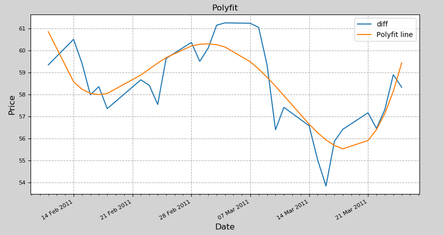

数据分析DAY07
扩展：数据清洗
检测与处理重复值
pandas提供了一个名为drop_duplicates的去重方法。该方法只对DataFrame或者Series类型有效。这种方法不会改变数据原始排列，并且兼具代码简洁和运行稳定的特点。该方法不仅支持单一特征的数据去重，还能够依据DataFrame的其中一个或者几个特征进行去重操作。
xxxxxxxxxx21dataFrame(Series).drop_duplicates(2 self, subset=None, keep='first', inplace=False)| 参数名 | 说明 |
|---|---|
| subset | 接收string或sequence。表示进行去重的列。默认为None，表示全部列。 |
| keep | 接收特定string。表示重复时保留第几个数据。first：保留第一个。last：保留最后一个。false：只要有重复都不保留。默认为first。 |
| inplace | 接收boolean。表示是否在原表上进行操作。默认为False。 |
示例：
xxxxxxxxxx51import pandas as pd2data=pd.DataFrame({'A':[1,1,2,2],'B':['a','b','a','b']})3data4data.drop_duplicates('A', 'first', inplace=True)5data
检测与处理缺失值
数据中的某个或某些特征的值是不完整的，这些值称为缺失值。 pandas提供了识别缺失值的方法isnull以及识别非缺失值的方法notnull，这两种方法在使用时返回的都是布尔值True和False。 结合sum函数和isnull、notnull函数，可以检测数据中缺失值的分布以及数据中一共含有多少缺失值。isnull和notnull之间结果正好相反，因此使用其中任意一个都可以判断出数据中缺失值的位置。
1）删除法
删除法分为删除观测记录和删除特征两种，pandas中提供了简便的删除缺失值的方法dropna，该方法既可以删除观测记录，亦可以删除特征。
xxxxxxxxxx21pandas.DataFrame.dropna(2 self, axis=0, how='any', thresh=None, subset=None, inplace=False)| 参数名 | 说明 |
|---|---|
| axis | 接收0或1。表示轴向，0为删除记录（行），1为删除特征（列）。默认为0。 |
| how | 接收特定string。表示删除的形式。any表示只要有缺失值存在就执行删除操作。all表示当且仅当全部为缺失值时执行删除操作。默认为any。 |
| subset | 接收类array数据。表示进行去重的列∕行。默认为None，表示所有列/行。 |
| inplace | 接收boolean。表示是否在原表上进行操作。默认为False。 |
示例：
xxxxxxxxxx151dates = pd.date_range('20130101', periods=6)2df = pd.DataFrame(np.arange(24).reshape((6,4)),index=dates, columns=['A','B','C','D'])3df.iloc[0,1] = np.nan4df.iloc[1,2] = np.nan5# df1接收，判断是否有缺失数据 NaN, 为 True 表示缺失数据:6df1=df.isnull()7df18#每一列的缺失数据9df2=df.isnull().sum()10df211#整个表的缺失数据12df2.sum()13# df1接收，去掉有 NaN 的行, 可以使用 dropna 一旦出现NaN就去除整行14df3=df.dropna(axis=0,how='any')15df32）替换法
替换法是指用一个特定的值替换缺失值。 特征可分为离散型和连续型，两者出现缺失值时的处理方法也是不同的。 缺失值所在特征为连续型时，通常利用其均值、中位数和众数等描述其集中趋势的统计量来代替缺失值。缺失值所在特征为离散型时，则经常选择使用众数来替换缺失值。
| 插补方法 | 方法描述 |
|---|---|
| 均值/中位数/众数插补 | 根据属性值的类型用该属性取值的平均数/中位数/众数进行插补 |
| 使用固定值 | 将缺失的属性值用一个常量替换。 |
| 最近临插补 | 在记录中找到与缺失样本最接近的样本的该属性值插补 |
| 回归方法 | 对带有缺失值的变量,根据已有数据和与其有关的其他变量(因变量)的数据建立拟合模型来预测缺失的属性值 |
| 插值法 | 插值法是利用已知点建立合适的插值函数f(x),未知值由对应点x求出的函数值f(x)近似代替 |
pandas库中提供了缺失值替换的方法名为fillna，其基本语法如下：
xxxxxxxxxx21pandas.DataFrame.fillna(2 value=None, method=None, axis=None, inplace=False, limit=None)常用参数及其说明如下：
| 参数名 | 说明 |
|---|---|
| value | 接收scalar，dict，Series或者DataFrame。表示用来替换缺失值的值。无默认。 |
| method | 接收特定string。backfill或bfill表示使用下一个非缺失值填补缺失值。pad或ffill表示使用上一个非缺失值填补缺失值。默认为None。 |
| axis | 接收0或1。表示轴向。默认为1。 |
| inplace | 接收boolean。表示是否在原表上进行操作。默认为False。 |
| limit | 接收int。表示填补缺失值个数上限，超过则不进行填补。默认为None。 |
案例：
xxxxxxxxxx121# df2接收，如果是将 NaN 的值用其他值代替, 比如代替成 0:2dates = pd.date_range('20130101', periods=6)3df = pd.DataFrame(np.arange(24).reshape((6,4)),index=dates, columns=['A','B','C','D'])4df.iloc[0,1] = np.nan5df.iloc[1,2] = np.nan6# 固定值填补7df2=df.fillna(value=0)8df29# 相似值填补10df3=df.fillna(method='pad', axis=1)11df3123）插值法 删除法简单易行，但是会引起数据结构变动，样本减少；替换法使用难度较低，但是会影响数据的标准差，导致信息量变动。在面对数据缺失问题时，除了这两种方法之外，还有一种常用的方法—插值法。
scipy提供了插值算法可以通过一组散点得到一个符合一定规律插值器函数。这样当我们给插值器函数更多未知x，插值函数将会返回相应的y用于填补缺失值。
需求：统计各小区彩民买彩票的情况：
| 彩民数量 | 彩票购买量 |
|---|---|
| 30 | 100注 |
| 40 | 120注 |
| 50 | 135注 |
| 60 | 155注 |
| 45 | - |
| 65 | 170注 |
scipy提供的插值方法如下：
xxxxxxxxxx61import scipy.interpolate as si2func = si.interp1d(3 离散水平坐标, 4 离散垂直坐标,5 kind=插值算法(缺省为线性插值)6)案例：
xxxxxxxxxx191"""2demo07_inter.py 插值器3"""4import numpy as np5import matplotlib.pyplot as mp6import scipy.interpolate as si78x = [30, 40, 50, 60, 65]9y = [100, 120, 135, 155, 170]10mp.scatter(x, y)1112xs = np.linspace(min(x), max(x), 200)13# 通过这些散点，构建一个线性插值函数14linear = si.interp1d(x, y, kind='cubic')15print(linear(45))16ys = linear(xs)17mp.plot(xs, ys)1819mp.show()
检测与处理异常值
简单统计量分析 先对变量做一个描述性统计，找出哪些数据是不合理的，最常用的统计量是求最大值和最小值，判断变量是否在这个区间。
3σ原则 3σ原则又称为拉依达法则。该法则就是先假设一组检测数据只含有随机误差，对原始数据进行计算处理得到标准差，然后按一定的概率确定一个区间，认为误差超过这个区间的就属于异常值。 这种判别处理方法仅适用于对正态或近似正态分布的样本数据进行处理。如果不符合正态分布，可以用远离平均值的多少倍标准差来表示。
箱线图分析
箱线图提供了识别异常值的一个标准，即异常值通常被定义为小于QL-1.5IQR或大于QU+1.5IQR的值。 QL称为下四分位数，表示全部观察值中有四分之一的数据取值比它小。 QU称为上四分位数，表示全部观察值中有四分之一的数据取值比它大。 IQR称为四分位数间距，是上四分位数QU与下四分位数QL之差，其间包含了全部观察值的一半。
异常值的处理方法：
| 异常值处理方法 | 方法描述 |
|---|---|
| 删除含有异常值的记录 | 直接删除含有异常值的记录 |
| 视为缺失值 | 将异常值视为缺失值，按照缺失值方法处理。 |
| 平均值修正 | 用前后两个观测值的均值进行修正。 |
| 不处理 | 直接在含有异常值的数据集上进行数据建模。 |
矩阵
矩阵是numpy.matrix类型的对象，该类继承自numpy.ndarray，任何针对多维数组的操作，对矩阵同样有效，但是作为子类矩阵又结合其自身的特点，做了必要的扩充，比如：乘法计算、求逆等。
1. 矩阵对象的创建
xxxxxxxxxx51# 通过ndarray对象创建matrix对象2numpy.matrix(3 ary, # 任何可被解释为矩阵的二维容器4 copy=True # 是否复制数据(缺省值为True，即复制数据)5)xxxxxxxxxx31# 等价于：numpy.matrix(..., copy=False)2# 由该函数创建的矩阵对象与参数中的源容器一定共享数据，无法拥有独立的数据拷贝3numpy.mat(任何可被解释为矩阵的二维容器)xxxxxxxxxx31# 该函数可以接受字符串形式的矩阵描述：2# 数据项通过空格分隔，数据行通过分号分隔。例如：'1 2 3; 4 5 6'3numpy.mat(拼块规则)示例：创建matrix
xxxxxxxxxx191# 创建matrix操作2import numpy as np34arr = np.arange(1, 10).reshape(3, 3)5print(arr)67# 第一种方式8m = np.matrix(arr, copy=True)9print(m)10print(m.shape)11print(type(m))1213# 第二种方式:共享方式14m2 = np.mat(arr)15print(m2)1617# 第三种方式18m3 = np.mat("1 2 3;4 5 6.0")19print(m3)
2. 矩阵的乘法运算
xxxxxxxxxx131# 矩阵乘法2import numpy as np34arr = np.array([[1, 1, 1],5 [2, 2, 2],6 [3, 3, 3]])7# 数组相乘, 各对应位置元素相乘8print(arr * arr)910# 矩阵相乘，第n行乘m列之和，作为结果的n,m个元素11# 矩阵相乘，第一个矩阵行数必须等于第二个矩阵列数12m = np.mat(arr)13print(m * m)
3. 矩阵的逆矩阵
若两个矩阵A、B满足：AB = E （E为单位矩阵），则称B为A的逆矩阵。
单位矩阵
在矩阵的乘法中，有一种矩阵起着特殊的作用，如同数的乘法中的1，这种矩阵被称为单位矩阵。它是个方阵，从左上角到右下角的对角线（称为主对角线）上的元素均为1，除此以外全都为0，记为或 ，通常用I或E来表示。根据单位矩阵的特点，任何矩阵与单位矩阵相乘都等于本身，而且单位矩阵因此独特性有广泛用途。以下是一个单位矩阵示例：
逆矩阵示例：
xxxxxxxxxx81e = np.mat("1 2 6; 3 5 7; 4 8 9")2print(e.I)3print(e * e.I)45# 非方阵的逆（称为广义逆矩阵）6e = np.mat("1 2 6; 3 5 7")7print(e.I)8print(e * e.I)注意：在计算过程中，可能出现如下错误，说明该矩阵不可逆。
xxxxxxxxxx11numpy.linalg.LinAlgError: Singular matrix
4. ndarray提供的矩阵API
ndarray提供了方法让多维数组替代矩阵的运算：
xxxxxxxxxx101a = np.array([2 [1, 2, 6],3 [3, 5, 7],4 [4, 8, 9]])5# 点乘法求ndarray的点乘结果，与矩阵的乘法运算结果相同6k = a.dot(a)7print(k)8# linalg模块中的inv方法可以求取a的逆矩阵9l = np.linalg.inv(a)10print(l)执行结果：
xxxxxxxxxx71[[ 31 60 74]2[ 46 87 116]3[ 64 120 161]]4[[-0.73333333 2. -1.06666667]5[ 0.06666667 -1. 0.73333333]6[ 0.26666667 0. -0.06666667]]7
5. 矩阵应用
案例：解线性方程组
假设一帮孩子和家长出去旅游，去程坐的是bus，小孩票价为3元，家长票价为3.2元，共花了118.4；回程坐的是Train，小孩票价为3.5元，家长票价为3.6元，共花了135.2。分别求小孩和家长的人数。使用矩阵求解。表达成方程为：
表示成矩阵相乘：
xxxxxxxxxx141import numpy as np23# 解方程4prices = np.mat('3 3.2; 3.5 3.6')5totals = np.mat('118.4; 135.2')67x = np.linalg.lstsq(prices, totals)[0] # 求最小二乘解8print(x)910x = np.linalg.solve(prices, totals) # 求解线性方程的解11print(x)1213x = prices.I * totals # 利用矩阵的逆进行求解14print(x)案例：斐波那契数列
1 1 2 3 5 8 13 21 34 ...
xxxxxxxxxx71X 1 1 1 1 1 12 1 0 1 0 1 03 --------------------------------41 1 2 1 3 2 5 351 0 1 1 2 1 3 26 F^1 F^2 F^3 F^4 ... f^n7代码
xxxxxxxxxx101import numpy as np2n = 3534# 使用递归实现斐波那契数列5def fibo(n):6 return 1 if n < 3 else fibo(n - 1) + fibo(n - 2)7print(fibo(n))89# 使用矩阵实现斐波那契数列10print(int((np.mat('1. 1.; 1. 0.') ** (n - 1))[0, 0]))数学建模
1. 线性模型
如下直线方程属于线性方程：
图像可表示为：

在实际应用，输入和输出可以用线性模型进行拟合，称之为线性模型或线性问题（如房屋面积与总价、成年人的身高与体重）。表示成图像如下图所示：

线性拟合
线性拟合就是试图找到一个最优的线性方程，可以最好的匹配当前样本（到所有样本的距离之和最短，误差最小）。若已知样本只有一个自变量与一个因变量，则线性方程可表示为：
线性拟合就是根据一组x, y的值，来寻求最佳k,b的值，这个过程也可称为线性回归。
有一组散点描述时间序列下的股价：
xxxxxxxxxx51[x1, y1]2[x2, y2]3[x3, y3] 4...5[xn, yn]我们希望所有点都可以被线性方程表示，姑且把所有样本带入方程可得：
xxxxxxxxxx51kx1 + b = y12kx2 + b = y23kx3 + b = y34...5kxn + b = yn这一组方程表示为矩阵相乘格式：
样本过多，每两组方程即可求得一组k与b的值。np.linalg.lstsq(a, b)可以通过最小二乘法求出所有结果中拟合误差最小的k与b的值。
案例：利用线型拟合画出股价的趋势线
- 绘制趋势线（趋势可以表示为最高价、最低价、收盘价的均值）：
xxxxxxxxxx771# 线性拟合示例2import numpy as np3import datetime as dt456#### 1.读取数据7# 日期格式转换函数: 将日月年转换为年月日格式8def dmy2ymd(dmy):9 dmy = str(dmy, encoding="utf-8")10 # 从指定字符串返回一个日期时间对象11 dat = dt.datetime.strptime(dmy, "%d-%m-%Y").date() # 字符串转日期12 tm = dat.strftime("%Y-%m-%d") # 日期转字符串13 return tm141516dates, open_prices, highest_prices, lowest_prices, close_prices = \17 np.loadtxt("../da_data/appl.csv", # 文件路径18 delimiter=",", # 指定分隔符19 usecols=(1, 3, 4, 5, 6), # 读取的列(下标从0开始)20 unpack=True, # 拆分数据21 dtype="M8[D], f8, f8, f8, f8", # 指定每一列的类型22 converters={1: dmy2ymd}) #2324#### 2.绘制图像25import matplotlib.pyplot as mp26import matplotlib.dates as md2728# 绘制k线图，x轴为日期29mp.figure("APPL K-Line", facecolor="lightgray")30mp.title("APPL K-Line")31mp.xlabel("Day", fontsize=12)32mp.ylabel("Price", fontsize=12)3334# 获取坐标轴35ax = mp.gca()36# 设置主刻度定位器为周定位器(每周一显示刻度文本)37ax.xaxis.set_major_locator(md.WeekdayLocator(byweekday=md.MO))38ax.xaxis.set_major_formatter(md.DateFormatter("%d %b %Y")) # %b表示月份简写39# 设置次刻度定位器为天定位器40ax.xaxis.set_minor_locator(md.DayLocator())41mp.tick_params(labelsize=8)42dates = dates.astype(md.datetime.datetime)4344mp.plot(dates, open_prices, color="dodgerblue", linestyle="--")45mp.gcf().autofmt_xdate() # 旋转、共享日期显示4647# 求得每天的趋势价格: 最高价、最低价、收盘价求平均值作为趋势价48trend_prices = (highest_prices + lowest_prices + close_prices) / 349mp.scatter(dates, trend_prices, marker="o",50 color="orangered", s=80, label="Trend Points")5152# 绘制趋势线53# A：日期转换为数字54# Y: 趋势价格(trend_prices)55days = dates.astype("M8[D]").astype("int32")56# print(days)57# column_stack: 将1d数组堆叠成2d数组58# ones_like: 返回与给定数组具有相同形状和类型的数组59A = np.column_stack((days, np.ones_like(days)))6061# lstsq(least-squares solution):最小二乘法，最小化误差的平方和寻找数据的最佳函数匹配62Y = trend_prices63x = np.linalg.lstsq(A, Y, rcond=None)[0] # x中包含了k, b的值6465trend_line = x[0] * days + x[1] # y = kx + b66mp.plot(dates, trend_line, color="orangered", label="Trend Line")6768if x[0] > 0:69 print("总体趋势上涨")70elif x[0] < 0:71 print("总体趋势下跌")72else:73 print("总体趋势持平")7475mp.grid(linestyle="--")76mp.legend()77mp.show()执行结果：

控制台输出：
xxxxxxxxxx11总体趋势上涨
课后作业
- 绘制顶部压力线（趋势线+(最高价 - 最低价)）
xxxxxxxxxx81trend_points = (highest_prices + lowest_prices + closing_prices) / 32spreads = highest_prices - lowest_prices3resistance_points = trend_points + spreads4days = dates.astype(int)5x = np.linalg.lstsq(a, resistance_points)[0]6resistance_line = days * x[0] + x[1]7mp.scatter(dates, resistance_points, c='orangered', alpha=0.5, s=60, zorder=2)8mp.plot(dates, resistance_line, c='orangered', linewidth=3, label='Resistance')- 绘制底部支撑线（趋势线-(最高价 - 最低价)）
xxxxxxxxxx81trend_points = (highest_prices + lowest_prices + closing_prices) / 32spreads = highest_prices - lowest_prices3support_points = trend_points - spreads4days = dates.astype(int)5x = np.linalg.lstsq(a, support_points)[0]6support_line = days * x[0] + x[1]7mp.scatter(dates, support_points, c='limegreen', alpha=0.5, s=60, zorder=2)8mp.plot(dates, support_line, c='limegreen', linewidth=3, label='Support')
2. 多项式模型
在有些数据分布中，使用一条曲线比直线能更好拟合数据，这就需要用到多项式拟合。如下图所示分布：

多项式的一般形式：
多项式拟合的目的是为了找到一组 ，使得拟合方程尽可能的与实际样本数据相符合。
假设拟合得到的多项式如下：
则拟合函数与真实结果的差方如下：
那么多项式拟合的过程即为求取一组, 使得loss的值最小。在程序中，多项式可以表示为一个数组，格式如下：
xxxxxxxxxx11f = [-6, 3, 8, 1]表示多项式为：
多项式拟合相关API：
xxxxxxxxxx41X = [x1, x2, ..., xn]2Y = [y1, y2, ..., yn]3#根据一组样本，并给出最高次幂，求出拟合系数4np.polyfit(X, Y, 最高次幂)多项式运算相关API：
xxxxxxxxxx111#根据拟合系数与自变量求出拟合值, 由此可得拟合曲线坐标样本数据 [X, Y']2np.polyval(P, X)->Y'34#多项式函数求导，根据拟合系数求出多项式函数导函数的系数5np.polyder(P)->Q 67#已知多项式系数Q 求多项式函数的根（与x轴交点的横坐标）8xs = np.roots(Q)910#两个多项式函数的差函数（对应系数相减）的系数（可以通过差函数的根求取两个曲线的交点）11Q = np.polysub(P1, P2)
案例：求多项式 y = 4x3 + 3x2 - 1000x + 1曲线驻点的坐标。
xxxxxxxxxx191'''21. 求出多项式的导函数32. 求出导函数的根，若导函数的根为实数，则该点则为曲线驻点。4'''5import numpy as np6import matplotlib.pyplot as mp78x = np.linspace(-20, 20, 1000) #生成数据9P = [4, 3, -1000, 1] #原函数的系数列表10y = np.polyval(P, x) #计算函数的值1112Q = np.polyder([4, 3, -1000, 1]) # 求导函数系数13print(Q)14xs = np.roots(Q) # 求导函数的根（y等于0，此时函数变化率为0，即切线为水平线）15ys = np.polyval(P, xs) #计算变化率为0时的y值1617mp.plot(x, y)18mp.scatter(xs, ys, s=80, c="orangered")19mp.show()执行结果：

案例：使用多项式函数拟合两只股票bhp、vale的差价函数：
xxxxxxxxxx671'''21. 计算两只股票的差价32. 利用多项式拟合求出与两只股票差价相近的多项式系数，最高次为44'''5import numpy as np6import datetime as dt78#### 1.读取数据9# 日期格式转换函数: 将日月年转换为年月日格式10def dmy2ymd(dmy):11 dmy = str(dmy, encoding="utf-8")12 # 从指定字符串返回一个日期时间对象13 dat = dt.datetime.strptime(dmy, "%d-%m-%Y").date() # 字符串转日期14 tm = dt.strftime("%Y-%m-%d") # 日期转字符串15 return tm161718dates, bhp_close_prices = np.loadtxt("../da_data/bhp.csv", # 文件路径19 delimiter=",", # 指定分隔符20 usecols=(1, 6), # 读取的列(下标从0开始)21 unpack=True, # 拆分数据22 dtype="M8[D], f8", # 指定每一列的类型23 converters={1: dmy2ymd}) #24dates, vale_close_prices = np.loadtxt("../da_data/vale.csv", # 文件路径25 delimiter=",", # 指定分隔符26 usecols=(1, 6), # 读取的列(下标从0开始)27 unpack=True, # 拆分数据28 dtype="M8[D], f8", # 指定每一列的类型29 converters={1: dmy2ymd}) #3031#### 2.绘制图像32import matplotlib.pyplot as mp33import matplotlib.dates as md3435# 绘制k线图，x轴为日期36mp.figure("Polyfit", facecolor="lightgray")37mp.title("Polyfit")38mp.xlabel("Date", fontsize=12)39mp.ylabel("Price", fontsize=12)4041# 获取坐标轴42ax = mp.gca()43# 设置主刻度定位器为周定位器(每周一显示刻度文本)44ax.xaxis.set_major_locator(md.WeekdayLocator(byweekday=md.MO))45ax.xaxis.set_major_formatter(md.DateFormatter("%d %b %Y")) # %b表示月份简写46# 设置次刻度定位器为天定位器47ax.xaxis.set_minor_locator(md.DayLocator())48mp.tick_params(labelsize=8)49dates = dates.astype(md.datetime.datetime)5051# 绘制差价函数52diff_prices = bhp_close_prices - vale_close_prices53mp.plot(dates, diff_prices, label="diff")5455# 寻找拟合差价函数56days = dates.astype("M8[D]").astype("int32")57# 做最小二乘多项式拟合58P = np.polyfit(days, # x59 diff_prices, # y60 4) # 维度61poly_prices = np.polyval(P, days) # 根据求得的系数，重新计算函数值62mp.plot(dates, poly_prices, label="Polyfit line")63mp.gcf().autofmt_xdate() # 旋转、共享日期显示6465mp.grid(linestyle="--")66mp.legend()67mp.show()执行结果：

多项式拟合的注意事项：
- 多项式拟合不能在数据样本之外的范围做预测
- 多项式拟合时容易造成过拟合（函数和样本拟合度太高，样本以外的数据则拟合度很低）